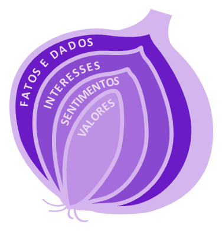

peração Curiosidade
Bem vindo de volta! Faça login para continuar
mail lockEsqueceu sua senha? Clique aqui



“A primeira camada da cebola é sobre conhecer o colaborador além do cargo, revelando suas emnecessidades e objetivos pessoais."
Powered by